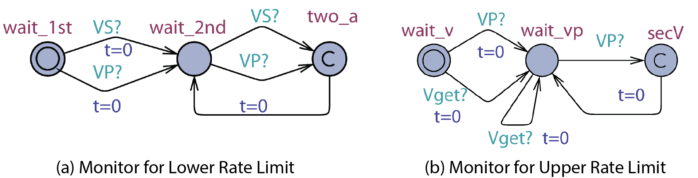
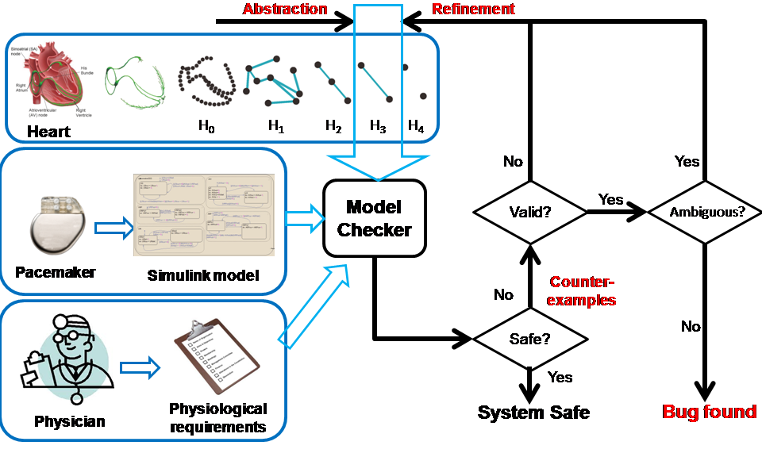
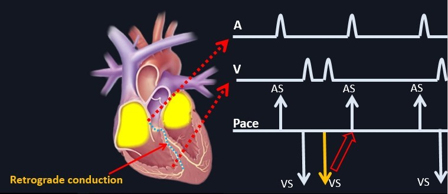
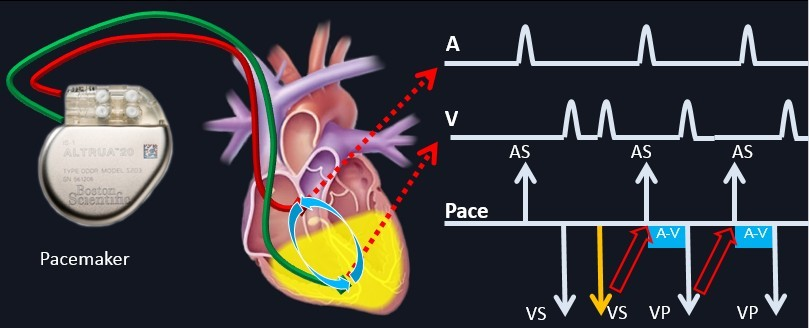
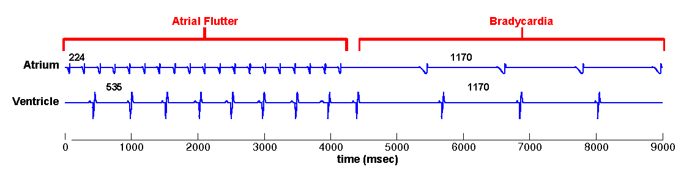
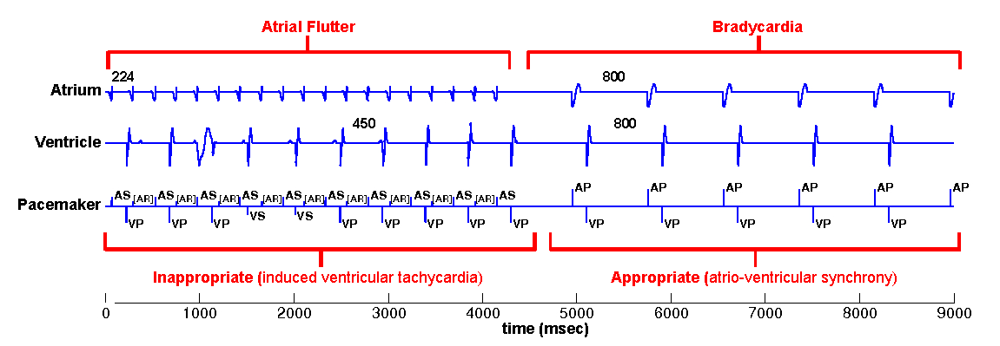
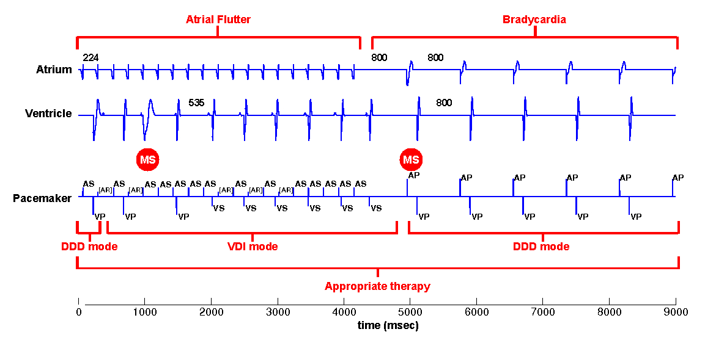

It is essential to guarantee the safety and efficacy of the device software

The final product: The safety and efficacy of the device itself
The development process: Rigorous design process which provides traceability of requirements

In traditionally software development, the domain experts first specify safety/efficacy requirements for the software. Together with a software engineer they agree on the software specification which is designed to address the requirements. Then together with an electrical engineer the specification is implemented on hardware. From the process we can see that the requirements, the specification and the implementation are 3 isolated documents and there is no formal proof to claim that the final implementation satisfies all the requirements. This is definitely a problem during FDA certification.
We developed a model based design framework which ensures the safety and efficacy of the pacemaker software. The software specification of the pacemaker software is first represented by a model. Together with the heart model we developed, the closed-loop system can be verified against safety/efficacy properties using Model Checking This process ensures that the specification is able to satisfy the requirements
A dual chamber pacemaker has 5 basic timing cycles which do the following things
Maintain lowest ventricular rate and highest paced ventricular rate to keep adquate and efficient blood supply.
An example of the 5 timers are shown below:

In model checker UPPAAL, we modeled each timing cycle as a component and they communicate with broadcast channels. The UPPAAL model of the 5 timing cycles are shown below:

For evaluating pacemaker which has only two leads and do simple thresholding for signal processing, we developed heart models at different abstraction levels, where each abstraction covers all possible states of the model in the previous abstraction level. Each abstraction step reduces the complexity of the timed automata component and/or the structure of the whole model. This establishes a timed simulation relationship between abstraction levels with  where n=[1,4]. More details on heart model abstraction can be found in our STTT paper.
where n=[1,4]. More details on heart model abstraction can be found in our STTT paper.

We first start with modeling the electrical behaviors of a heart tissue. A whole model of the heart consists of node automata (N0) which models the timed transitions among different time periods with different behaviors after the tissue is depolarized. The heart can then be modeled as:  where N can be arbitarily large.
where N can be arbitarily large.
Proposed use:

In this abstraction we replace the cond state of N0 with path automata. The heart model H0 can be replaced by  . A more general abstraction abstracts 3 nodes and 2 paths into 2 nodes and 1 path:
. A more general abstraction abstracts 3 nodes and 2 paths into 2 nodes and 1 path: . With this property we can further abstract the structure of the model. The heart model H0.5 can be further abstracted into
. With this property we can further abstract the structure of the model. The heart model H0.5 can be further abstracted into  where m=9 in the structure shown on the right.
where m=9 in the structure shown on the right.
Proposed use:
 At this abstraction level, we merge the RRP state with the Rest state in the node automata and Double with the Idle state in the path automata due to the same behavior. We also further abstract the structure of the heart model so H1 can be abstracted with
At this abstraction level, we merge the RRP state with the Rest state in the node automata and Double with the Idle state in the path automata due to the same behavior. We also further abstract the structure of the heart model so H1 can be abstracted with  . The AV node has very large ERP period thus cannot be abstracted away.
. The AV node has very large ERP period thus cannot be abstracted away.
Proposed use:
Verify pacemaker algorithms in which the blocking property of the AV node cannot be ignored
 The node automata do not trigger path conduction in response to external activation during its ERP state. In this abstraction level, this function is replaced by a non-determnistic transition in the path automata, as shown in the figure on the right. As a result of the abstraction, the AV node can be abstracted away and the heart model H2 can be abstracted by
The node automata do not trigger path conduction in response to external activation during its ERP state. In this abstraction level, this function is replaced by a non-determnistic transition in the path automata, as shown in the figure on the right. As a result of the abstraction, the AV node can be abstracted away and the heart model H2 can be abstracted by  .
.
Proposed use:
Verify pacemaker algorithms in which A-V conduction cannot be ignored
 Since the pacemaker only has two leads, the structure of the heart model can be further reduced to two node automata which can generate inputs to the pacemaker without timing constraints. The heart model H3 can be further abstracted to
Since the pacemaker only has two leads, the structure of the heart model can be further reduced to two node automata which can generate inputs to the pacemaker without timing constraints. The heart model H3 can be further abstracted to  . This heart model covers all possible inputs to the pacemaker and is our most abstracted model.
. This heart model covers all possible inputs to the pacemaker and is our most abstracted model.
Proposed use:
Verify pacemaker algorithms with unconditional properties.
For model checking, we start from basic safety properties which should be satisfied by the pacemaker under all possible heart conditions. In this section, the most abstract heart model H4 which covers all possible heart inputs to the pacemaker, is the most suitable heart model to use.
The most intuitive unsafe states for the pacemaker is when the ventricular rate is too low or the pacemaker is pacing the ventricles too fast. The two monitors PLRI_test and PURI_test which helps property specification is shown below:
The property for the Lower Rate Limit is and the property for the Upper Rate Limit is . Our verification results shows that the basic dual chamber pacemaker with 5 timing cycles satisfies both properties: and
Most of the time the unsafe behavior of the pacemaker cannot be identified as a single state, but as closed-loop executions over a period of time. In this section, we use 2 already idendified and studied unsafe executions: Endless loop Tachycardia (ELT), and Atrial Tachycardia Response (ATR), as case studied to show:
The most intuitive unsafe states for the pacemaker is when the ventricular rate is too low or the pacemaker is pacing the ventricles too fast. The two monitors PLRI_test and PURI_test which helps property specification is shown below:

The most intuitive unsafe states for the pacemaker is when the ventricular rate is too low or the pacemaker is pacing the ventricles too fast. The two monitors PLRI_test and PURI_test which helps property specification is shown below:
The property for the Lower Rate Limit is and the property for the Upper Rate Limit is . Our verification results shows that the basic dual chamber pacemaker with 5 timing cycles satisfies both properties: and
The most intuitive unsafe states for the pacemaker is when the ventricular rate is too low or the pacemaker is pacing the ventricles too fast. The two monitors PLRI_test and PURI_test which helps property specification is shown below:
The property for the Lower Rate Limit is and the property for the Upper Rate Limit is . Our verification results shows that the basic dual chamber pacemaker with 5 timing cycles satisfies both properties: and
The most intuitive unsafe states for the pacemaker is when the ventricular rate is too low or the pacemaker is pacing the ventricles too fast. The two monitors PLRI_test and PURI_test which helps property specification is shown below:
The property for the Lower Rate Limit is and the property for the Upper Rate Limit is . Our verification results shows that the basic dual chamber pacemaker with 5 timing cycles satisfies both properties: and
 © MedCPS. ALL Rights Reserved.